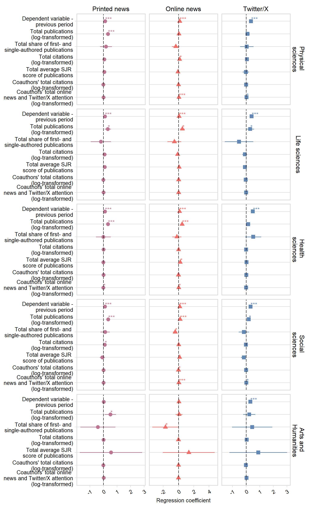

Robustness checks fitting two-way fixed-effects models. All specifications include standard errors clustered at the professor level.
Load the packages:
source("helper_functions.R")
packages_to_load <- c("readr", "dplyr", "tidyr",
"ggplot2", "cowplot",
"tidyverse", "RPostgres",
"lubridate", "lmtest",
"sandwich", "ggpubr",
"knitr", "scales", "plm",
"ggeffects", "flextable",
"officer", "DescTools",
"gglorenz", "corrplot")
fpackage_check(packages_to_load)
# For full reproducibility, load the packages with groundhog using the code below instead
# of the fpackage_check function
# library(groundhog)
# groundhog.library(packages_to_load, date = "2024-4-23")Load the panel dataset:
prof_panel_filter <- read_csv("panel_datasets/prof_panel_anonymised.csv")
all_reg_rob_list <- list()Below, we fit the FE models for all three types of attention and including all the variables included in the main models.
Printed news attention:
news_formula_main_model <- "log(news_all+1) ~ inferred_gender + years_since_first_pub + as.factor(year) + log(count_pubs_total_l+1) + log(cited_by_total_all_l+1) + log(coa_tot_cited_by_total_l+1) + log(coa_online_combi_total_l+1) + log(alt_online_all_total_l+1) + log(alt_twitter_total_l+1) + avg_sjr_total_l + share_first_au_total_l + institution_dutch_total_narcis"
news_model <- fe_re_fitter_cl_robust_scopus(panel_dataset = prof_panel_filter,
lm_formula = news_formula_main_model,
year_cutoff_upper = 2023,
year_cutoff_lower = 2012,
index = c("profile_id", "year"),
fe_re = "fe")Online news attention:
online_news_formula_main_model <- "log(alt_online_all+1) ~ inferred_gender + years_since_first_pub + as.factor(year) + log(count_pubs_total_l+1) + log(cited_by_total_all_l+1) + log(coa_tot_cited_by_total_l+1) + log(coa_online_combi_total_l+1) + log(news_all_total_l+1) + log(alt_twitter_total_l+1) + avg_sjr_total_l + share_first_au_total_l + institution_dutch_total_narcis"
online_news_model <- fe_re_fitter_cl_robust_scopus(panel_dataset = prof_panel_filter,
lm_formula = online_news_formula_main_model,
year_cutoff_upper = 2023,
year_cutoff_lower = 2012,
index = c("profile_id", "year"),
fe_re = "fe")Twitter/X:
twitter_formula_main_model <- "log(alt_twitter+1) ~ inferred_gender + years_since_first_pub + as.factor(year) + log(count_pubs_total_l+1) + log(cited_by_total_all_l+1) + log(coa_tot_cited_by_total_l+1) + log(coa_online_combi_total_l+1) + log(news_all_total_l+1) + log(alt_online_all_total_l+1) + avg_sjr_total_l + share_first_au_total_l + institution_dutch_total_narcis"
twitter_model <- fe_re_fitter_cl_robust_scopus(panel_dataset = prof_panel_filter,
lm_formula = twitter_formula_main_model,
year_cutoff_upper = 2023,
year_cutoff_lower = 2012,
index = c("profile_id", "year"),
fe_re = "fe")Write out the result table:
options(scipen=999)
table_models <- neat_regression_table_scopus(news_model[[1]],
online_news_model[[1]],
twitter_model[[1]],
fe = "yes")
# add to the list
all_reg_rob_list[['fe']] <- table_models
table_models_save <- table_models %>%
regulartable() %>%
set_caption("Main model - two-way fixed effects")%>%
autofit()
word_document_name <-
read_docx() %>%
body_add_flextable(table_models_save) %>%
print(target = "results/supplement_tables/SI_online_main_model_table_fe.docx")Show the table below:
(table_models_save)field | term | coef_printed | sig_printed | se_printed | coef_online | sig_online | se_online | coef_twitter | sig_twitter | se_twitter |
|---|---|---|---|---|---|---|---|---|---|---|
Physical Sciences | Total citations (log, t-1) | 0.06946 | (0.05231) | 0.14440 | * | (0.0515) | 0.04075 | (0.07152) | ||
Total online attention (log, t-1) | 0.04913 | *** | (0.01282) | 0.08063 | *** | (0.01921) | ||||
Total online attention (log, t-1) | 0.10557 | *** | (0.02697) | 0.06775 | * | (0.03265) | ||||
Total Twitter/X attention (log, t-1) | 0.02121 | * | (0.01061) | 0.06771 | *** | (0.01293) | ||||
Coauthors' total citations (log, t-1) | -0.00692 | (0.00877) | -0.00774 | (0.01007) | -0.01511 | (0.01191) | ||||
Coauthors' total online and Twitter/X attention (log, t-1) | 0.00660 | (0.00781) | 0.06247 | *** | (0.009) | 0.06717 | *** | (0.00999) | ||
Average SJR of total publications (t-1) | 0.07963 | (0.08319) | 0.00442 | (0.10151) | 0.10786 | (0.16404) | ||||
Share total publications as first/single author (t-1) | 0.19671 | (0.24669) | -0.45925 | (0.29459) | 0.06265 | (0.36143) | ||||
Total publications (log, t-1) | 0.37984 | *** | (0.08217) | 0.04912 | (0.09153) | 0.32176 | * | (0.12378) | ||
R^2 | 0.01500 | *** | (-0.093) | 0.02600 | *** | (-0.081) | 0.02200 | *** | (-0.085) | |
Life Sciences | Total citations (log, t-1) | 0.09061 | (0.08642) | -0.13261 | (0.10064) | -0.25496 | . | (0.13971) | ||
Total online attention (log, t-1) | -0.03870 | * | (0.01897) | 0.02469 | (0.03076) | |||||
Total online attention (log, t-1) | 0.04464 | (0.03739) | 0.08572 | (0.05855) | ||||||
Total Twitter/X attention (log, t-1) | 0.00438 | (0.01342) | 0.04538 | * | (0.01455) | |||||
Coauthors' total citations (log, t-1) | -0.01027 | (0.01772) | 0.01426 | (0.02084) | -0.04064 | (0.02802) | ||||
Coauthors' total online and Twitter/X attention (log, t-1) | 0.00920 | (0.01182) | 0.01427 | (0.01449) | 0.04807 | * | (0.01767) | |||
Average SJR of total publications (t-1) | 0.11690 | . | (0.06004) | 0.09924 | (0.06746) | -0.08390 | (0.10502) | |||
Share total publications as first/single author (t-1) | -0.19433 | (0.40815) | -0.57349 | (0.48254) | -1.03524 | (0.74011) | ||||
Total publications (log, t-1) | 0.36487 | * | (0.13142) | 0.54118 | *** | (0.16164) | 0.79458 | *** | (0.214) | |
R^2 | 0.00900 | *** | (-0.098) | 0.01300 | *** | (-0.093) | 0.01900 | *** | (-0.086) | |
Health Sciences | Total citations (log, t-1) | -0.00211 | (0.05069) | 0.02057 | (0.05867) | -0.09498 | (0.08227) | |||
Total online attention (log, t-1) | 0.02092 | (0.01336) | 0.09038 | *** | (0.01851) | |||||
Total online attention (log, t-1) | 0.11681 | *** | (0.02155) | 0.10105 | * | (0.03406) | ||||
Total Twitter/X attention (log, t-1) | 0.03261 | *** | (0.0099) | 0.07061 | *** | (0.01018) | ||||
Coauthors' total citations (log, t-1) | 0.00299 | (0.01089) | -0.01688 | (0.0119) | 0.05330 | * | (0.01749) | |||
Coauthors' total online and Twitter/X attention (log, t-1) | -0.01377 | . | (0.00704) | 0.03005 | *** | (0.00778) | 0.03321 | *** | (0.01001) | |
Average SJR of total publications (t-1) | -0.00821 | (0.05758) | 0.28935 | *** | (0.07721) | 0.04238 | (0.11786) | |||
Share total publications as first/single author (t-1) | -0.01278 | (0.30281) | -0.21590 | (0.34169) | 0.67789 | (0.52612) | ||||
Total publications (log, t-1) | 0.36676 | *** | (0.07356) | 0.50749 | *** | (0.08888) | 0.53528 | *** | (0.13276) | |
R^2 | 0.00800 | *** | (-0.098) | 0.02800 | *** | (-0.075) | 0.02300 | *** | (-0.081) | |
Social Sciences | Total citations (log, t-1) | 0.11386 | * | (0.03877) | 0.01949 | (0.03286) | -0.04848 | (0.04714) | ||
Total online attention (log, t-1) | 0.02922 | * | (0.01402) | 0.06080 | *** | (0.01686) | ||||
Total online attention (log, t-1) | 0.04360 | * | (0.01918) | 0.07498 | * | (0.02807) | ||||
Total Twitter/X attention (log, t-1) | 0.02274 | * | (0.01104) | 0.06478 | *** | (0.00898) | ||||
Coauthors' total citations (log, t-1) | 0.00342 | (0.00828) | -0.01806 | * | (0.00558) | -0.00483 | (0.00911) | |||
Coauthors' total online and Twitter/X attention (log, t-1) | 0.01006 | (0.00696) | 0.04262 | *** | (0.00529) | 0.04774 | *** | (0.0078) | ||
Average SJR of total publications (t-1) | -0.08201 | (0.10346) | 0.23105 | * | (0.10321) | 0.03188 | (0.13695) | |||
Share total publications as first/single author (t-1) | 0.16052 | (0.19262) | -0.55003 | *** | (0.16027) | -0.40193 | (0.25597) | |||
Total publications (log, t-1) | 0.40062 | *** | (0.06858) | 0.22440 | *** | (0.06075) | 0.38267 | *** | (0.08427) | |
R^2 | 0.01400 | *** | (-0.117) | 0.03000 | *** | (-0.1) | 0.01900 | *** | (-0.112) | |
Arts & Humanities | Total citations (log, t-1) | 0.01259 | (0.06596) | -0.00902 | (0.0604) | 0.08832 | (0.10444) | |||
Total online attention (log, t-1) | -0.04016 | (0.04503) | 0.10934 | (0.08594) | ||||||
Total online attention (log, t-1) | -0.08311 | (0.06135) | -0.06655 | (0.12597) | ||||||
Total Twitter/X attention (log, t-1) | 0.05624 | (0.03991) | 0.07508 | * | (0.03208) | |||||
Coauthors' total citations (log, t-1) | -0.01536 | (0.02495) | -0.00421 | (0.01651) | -0.01561 | (0.02156) | ||||
Coauthors' total online and Twitter/X attention (log, t-1) | 0.02000 | (0.02026) | -0.01515 | (0.02009) | 0.07214 | * | (0.0308) | |||
Average SJR of total publications (t-1) | 0.55024 | (1.18462) | 1.51692 | (1.77345) | 1.86100 | (1.51555) | ||||
Share total publications as first/single author (t-1) | -0.40914 | (0.6643) | -1.79556 | . | (0.93488) | 0.56673 | (1.01684) | |||
Total publications (log, t-1) | 0.52771 | * | (0.21802) | 0.07632 | (0.23752) | 0.35192 | (0.30741) | |||
R^2 | 0.02000 | *** | (-0.233) | 0.03900 | *** | (-0.209) | 0.04600 | *** | (-0.201) |
Now, fit the FE models with the first lag of the dependent variable included:
Printed news attention:
news_formula_main_model <- "log(news_all+1) ~ log(news_all_l+1) + inferred_gender + years_since_first_pub + as.factor(year) + log(count_pubs_total_l+1) + log(cited_by_total_all_l+1) + log(coa_tot_cited_by_total_l+1) + log(coa_online_combi_total_l+1) + log(alt_online_all_total_l+1) + log(alt_twitter_total_l+1) + avg_sjr_total_l + share_first_au_total_l + institution_dutch_total_narcis"
news_model <- fe_re_fitter_cl_robust_scopus(panel_dataset = prof_panel_filter,
lm_formula = news_formula_main_model,
year_cutoff_upper = 2023,
year_cutoff_lower = 2012,
index = c("profile_id", "year"),
fe_re = "fe")Online news attention:
online_news_formula_main_model <- "log(alt_online_all+1) ~ log(alt_online_all_l+1) + inferred_gender + years_since_first_pub + as.factor(year) + log(count_pubs_total_l+1) + log(cited_by_total_all_l+1) + log(coa_tot_cited_by_total_l+1) + log(coa_online_combi_total_l+1) + log(news_all_total_l+1) + log(alt_twitter_total_l+1) + avg_sjr_total_l + share_first_au_total_l + institution_dutch_total_narcis"
online_news_model <- fe_re_fitter_cl_robust_scopus(panel_dataset = prof_panel_filter,
lm_formula = online_news_formula_main_model,
year_cutoff_upper = 2023,
year_cutoff_lower = 2012,
index = c("profile_id", "year"),
fe_re = "fe")Twitter/X:
twitter_formula_main_model <- "log(alt_twitter+1) ~ log(alt_twitter_l+1) + inferred_gender + years_since_first_pub + as.factor(year) + log(count_pubs_total_l+1) + log(cited_by_total_all_l+1) + log(coa_tot_cited_by_total_l+1) + log(coa_online_combi_total_l+1) + log(news_all_total_l+1) + log(alt_online_all_total_l+1) + avg_sjr_total_l + share_first_au_total_l + institution_dutch_total_narcis"
twitter_model <- fe_re_fitter_cl_robust_scopus(panel_dataset = prof_panel_filter,
lm_formula = twitter_formula_main_model,
year_cutoff_upper = 2023,
year_cutoff_lower = 2012,
index = c("profile_id", "year"),
fe_re = "fe")Combine the models and write out the table:
options(scipen=999)
table_models <- neat_regression_table_scopus(news_model[[1]],
online_news_model[[1]],
twitter_model[[1]],
fe = "yes")
# add to the list
all_reg_rob_list[['fe']] <- table_models
table_models_save <- table_models %>%
regulartable() %>%
set_caption("Main model - two-way fixed effects with lag")%>%
autofit()
word_document_name <-
read_docx() %>%
body_add_flextable(table_models_save) %>%
print(target = "results/supplement_tables/SI_online_main_model_table_fe_lag.docx")Show the table below:
table_models_savefield | term | coef_printed | sig_printed | se_printed | coef_online | sig_online | se_online | coef_twitter | sig_twitter | se_twitter |
|---|---|---|---|---|---|---|---|---|---|---|
Physical Sciences | Total citations (log, t-1) | 0.06734 | (0.0475) | 0.13320 | * | (0.04536) | 0.06575 | (0.04922) | ||
Total online attention (log, t-1) | 0.03534 | * | (0.01155) | -0.00075 | (0.01404) | |||||
Total online attention (log, t-1) | 0.07706 | * | (0.02363) | 0.03571 | (0.02327) | |||||
Total Twitter/X attention (log, t-1) | 0.01828 | . | (0.00963) | 0.04817 | *** | (0.01177) | ||||
Coauthors' total citations (log, t-1) | -0.00758 | (0.00821) | -0.00752 | (0.00917) | -0.00414 | (0.00862) | ||||
Coauthors' total online and Twitter/X attention (log, t-1) | 0.00695 | (0.00721) | 0.04594 | *** | (0.0077) | 0.02419 | * | (0.00752) | ||
Average SJR of total publications (t-1) | 0.06888 | (0.07487) | -0.08528 | (0.09077) | -0.02053 | (0.12007) | ||||
Share total publications as first/single author (t-1) | 0.18995 | (0.22681) | -0.36221 | (0.25957) | 0.04919 | (0.25253) | ||||
Total publications (log, t-1) | 0.33381 | *** | (0.07459) | 0.04831 | (0.0807) | 0.10943 | (0.08396) | |||
Dependent variable (t-1) | 0.14708 | *** | (0.01453) | |||||||
Dependent variable (t-1) | 0.36268 | *** | (0.01331) | |||||||
Dependent variable (t-1) | 0.12374 | *** | (0.01291) | |||||||
R^2 | 0.02900 | *** | (-0.078) | 0.04400 | *** | (-0.061) | 0.14300 | * | (0.049) | |
Life Sciences | Total citations (log, t-1) | 0.08639 | (0.07866) | -0.11787 | (0.09585) | -0.09696 | (0.09404) | |||
Total online attention (log, t-1) | -0.04619 | * | (0.01757) | -0.06235 | * | (0.02275) | ||||
Total online attention (log, t-1) | 0.03215 | (0.03565) | 0.05837 | (0.04475) | ||||||
Total Twitter/X attention (log, t-1) | 0.00154 | (0.0122) | 0.03837 | * | (0.014) | |||||
Coauthors' total citations (log, t-1) | -0.00905 | (0.01671) | 0.01477 | (0.02013) | -0.02911 | (0.02041) | ||||
Coauthors' total online and Twitter/X attention (log, t-1) | 0.01056 | (0.0111) | 0.00822 | (0.01387) | 0.00027 | (0.01334) | ||||
Average SJR of total publications (t-1) | 0.10308 | . | (0.05513) | 0.07497 | (0.06502) | -0.08787 | (0.0725) | |||
Share total publications as first/single author (t-1) | -0.18666 | (0.37871) | -0.54550 | (0.45926) | -0.52318 | (0.53594) | ||||
Total publications (log, t-1) | 0.32329 | * | (0.1185) | 0.49899 | * | (0.15405) | 0.29807 | * | (0.14623) | |
Dependent variable (t-1) | 0.05780 | *** | (0.01462) | |||||||
Dependent variable (t-1) | 0.40436 | *** | (0.01691) | |||||||
Dependent variable (t-1) | 0.10782 | *** | (0.01744) | |||||||
R^2 | 0.02000 | *** | (-0.085) | 0.01600 | *** | (-0.09) | 0.16700 | . | (0.077) | |
Health Sciences | Total citations (log, t-1) | -0.00045 | (0.04613) | 0.00018 | (0.05293) | -0.00040 | (0.05068) | |||
Total online attention (log, t-1) | 0.01219 | (0.01226) | -0.00927 | (0.01195) | ||||||
Total online attention (log, t-1) | 0.09560 | *** | (0.01944) | 0.05991 | * | (0.02063) | ||||
Total Twitter/X attention (log, t-1) | 0.02872 | * | (0.00893) | 0.05597 | *** | (0.0093) | ||||
Coauthors' total citations (log, t-1) | 0.00194 | (0.01013) | -0.01811 | . | (0.01096) | 0.01657 | (0.01105) | |||
Coauthors' total online and Twitter/X attention (log, t-1) | -0.01320 | * | (0.00659) | 0.01965 | * | (0.00716) | 0.00528 | (0.00683) | ||
Average SJR of total publications (t-1) | -0.00862 | (0.05313) | 0.21474 | * | (0.07039) | 0.02824 | (0.07063) | |||
Share total publications as first/single author (t-1) | -0.00467 | (0.27623) | -0.22027 | (0.30475) | 0.52176 | . | (0.30223) | |||
Total publications (log, t-1) | 0.33502 | *** | (0.06775) | 0.46265 | *** | (0.08028) | 0.14940 | . | (0.07908) | |
Dependent variable (t-1) | 0.12704 | *** | (0.01014) | |||||||
Dependent variable (t-1) | 0.49157 | *** | (0.01192) | |||||||
Dependent variable (t-1) | 0.11421 | *** | (0.01279) | |||||||
R^2 | 0.02100 | *** | (-0.084) | 0.04300 | *** | (-0.06) | 0.24500 | (0.164) | ||
Social Sciences | Total citations (log, t-1) | 0.09957 | * | (0.03551) | 0.02175 | (0.0289) | -0.01657 | (0.03558) | ||
Total online attention (log, t-1) | 0.02217 | . | (0.01287) | 0.00603 | (0.01236) | |||||
Total online attention (log, t-1) | 0.03247 | . | (0.01697) | 0.04629 | * | (0.02094) | ||||
Total Twitter/X attention (log, t-1) | 0.01954 | . | (0.01005) | 0.05027 | *** | (0.00816) | ||||
Coauthors' total citations (log, t-1) | 0.00363 | (0.00777) | -0.01504 | * | (0.00498) | -0.00678 | (0.00706) | |||
Coauthors' total online and Twitter/X attention (log, t-1) | 0.00916 | (0.00646) | 0.03409 | *** | (0.00477) | 0.02016 | * | (0.00614) | ||
Average SJR of total publications (t-1) | -0.07823 | (0.09527) | 0.13451 | (0.0908) | -0.17031 | (0.10546) | ||||
Share total publications as first/single author (t-1) | 0.12208 | (0.17607) | -0.44533 | * | (0.1405) | -0.16146 | (0.19222) | |||
Total publications (log, t-1) | 0.35575 | *** | (0.06244) | 0.18982 | *** | (0.05292) | 0.19992 | * | (0.06097) | |
Dependent variable (t-1) | 0.15084 | *** | (0.01245) | |||||||
Dependent variable (t-1) | 0.32601 | *** | (0.0139) | |||||||
Dependent variable (t-1) | 0.11635 | *** | (0.01109) | |||||||
R^2 | 0.02700 | *** | (-0.103) | 0.05000 | *** | (-0.077) | 0.11500 | *** | (-0.003) | |
Arts & Humanities | Total citations (log, t-1) | 0.01366 | (0.06583) | -0.00955 | (0.05806) | 0.03757 | (0.07834) | |||
Total online attention (log, t-1) | -0.04091 | (0.04461) | 0.06556 | (0.0722) | ||||||
Total online attention (log, t-1) | -0.08477 | (0.06029) | -0.07916 | (0.10231) | ||||||
Total Twitter/X attention (log, t-1) | 0.05514 | (0.04049) | 0.07231 | * | (0.03116) | |||||
Coauthors' total citations (log, t-1) | -0.01519 | (0.0247) | -0.00415 | (0.0161) | -0.01269 | (0.01704) | ||||
Coauthors' total online and Twitter/X attention (log, t-1) | 0.02016 | (0.02006) | -0.01568 | (0.01959) | 0.03594 | (0.02521) | ||||
Average SJR of total publications (t-1) | 0.55893 | (1.17217) | 1.34899 | (1.73096) | 0.89274 | (1.0835) | ||||
Share total publications as first/single author (t-1) | -0.40662 | (0.65634) | -1.72522 | * | (0.87771) | 0.44270 | (0.75543) | |||
Total publications (log, t-1) | 0.51904 | * | (0.21315) | 0.07406 | (0.22952) | 0.23060 | (0.22779) | |||
Dependent variable (t-1) | 0.04735 | (0.05307) | ||||||||
Dependent variable (t-1) | 0.31067 | *** | (0.05694) | |||||||
Dependent variable (t-1) | 0.01561 | (0.04073) | ||||||||
R^2 | 0.02100 | *** | (-0.234) | 0.04100 | *** | (-0.208) | 0.12700 | *** | (-0.1) |
saveRDS(all_reg_rob_list, "results/main_models_fe.RDS")Plot out the coefficients.
First, preparing the coefficient dataframe:
model_news <- news_model[[1]]
model_online_news <- online_news_model[[1]]
model_twitter <- twitter_model[[1]]
model_news$model <- "News attention"
model_online_news$model <- "Online news attention"
model_twitter$model <- "Twitter attention"
all_models_plot <- rbind(model_news,
model_online_news,
model_twitter)
# do the t-1 of dependent as a single variable
all_models_plot$term <- ifelse(all_models_plot$term %in% c("log(news_all_l + 1)",
"log(alt_online_all_l + 1)",
"log(alt_twitter_l + 1)"),
"t_min_1",
all_models_plot$term)
all_models_plot$term <- ordered(all_models_plot$term,
levels = c(
"(Intercept)",
"t_min_1",
"log(count_pubs_total_l + 1)",
"share_first_au_total_l",
"log(cited_by_total_all_l + 1)",
"avg_sjr_total_l",
"log(news_all_total_l + 1)",
"log(alt_online_all_total_l + 1)",
"log(alt_twitter_total_l + 1)",
"log(coa_tot_cited_by_total_l + 1)",
"log(coa_online_combi_total_l + 1)",
"years_since_first_pub",
"as.factor(year)2014",
"as.factor(year)2015",
"as.factor(year)2016",
"as.factor(year)2017",
"as.factor(year)2018",
"as.factor(year)2019",
"as.factor(year)2020",
"as.factor(year)2021",
"as.factor(year)2022",
"as.factor(year)2023",
"institution_dutch_total_narcisuni_1",
"institution_dutch_total_narcisuni_2",
"institution_dutch_total_narcisuni_3",
"institution_dutch_total_narcisuni_4",
"institution_dutch_total_narcisuni_5",
"institution_dutch_total_narcisuni_6",
"institution_dutch_total_narcisuni_7",
"institution_dutch_total_narcisuni_8",
"institution_dutch_total_narcisuni_9",
"institution_dutch_total_narcisuni_10",
"institution_dutch_total_narcisuni_11",
"institution_dutch_total_narcisuni_12",
"institution_dutch_total_narcisuni_13",
"institution_dutch_total_narcisuni_14",
"institution_dutch_total_narcisuni_15",
"R^2"))
all_models_plot$model <- ordered(all_models_plot$model,
levels = c("News attention",
"Online news attention",
"Twitter attention" ))
all_models_plot$field <- ordered(all_models_plot$field,
levels = c("phys",
"life",
"health",
"soc_sci",
"arts"))
covariate_names <- c(
't_min_1' = "Dependent variable -\n previous period",
'log(cited_by_total_all_l + 1)'="Total citations\n(log-transformed)",
'log(count_pubs_total_l + 1)'="Total publications\n(log-transformed)",
'log(news_all_total_l + 1)'="Total printed news \nattention (log-transformed)",
'log(alt_online_all_total_l + 1)'="Total online news\n attention (log-transformed)",
'log(alt_twitter_total_l + 1)'="Total Twitter/X \nattention (log-transformed)",
'log(coa_tot_cited_by_total_l + 1)' = "Coauthors' total citations\n(log-transformed)",
'log(coa_online_combi_total_l + 1)' = "Coauthors' total online \nnews and Twitter/X attention\n(log-transformed)",
'share_first_au_total_l' = "Total share of first- and \nsingle-authored publications",
'avg_sjr_total_l' = "Total average SJR \nscore of publications"
)Draw the plot:
field_names <- c("arts" = "Arts and\n Humanities",
"health" = "Health \nsciences",
"soc_sci" = "Social \nsciences",
"life" = "Life sciences",
"phys" = "Physical \nsciences")
media_names <- c('News attention' = "Printed news",
'Online news attention' = "Online news",
'Twitter attention' = "Twitter/X")
media_field_names <- c(media_names,
field_names)
(all_plot <- all_models_plot %>%
filter(term %in% c(
"t_min_1",
"log(count_pubs_total_l + 1)",
"share_first_au_total_l",
"log(cited_by_total_all_l + 1)",
"avg_sjr_total_l",
"log(coa_tot_cited_by_total_l + 1)",
"log(coa_online_combi_total_l + 1)")) %>%
ggplot(aes(Estimate, fct_rev(term), color = model, shape = model, label = stars)) +
geom_point(position = position_dodge(width = -0.7), size = 3) +
geom_errorbar(aes(xmin = lower_ci, xmax = upper_ci),
width=0,
size=0.7,
position = position_dodge(width = -0.7)) +
geom_text(hjust=0, vjust=0, position = position_dodge(width = -0.7), size = 3.5)+
scale_y_discrete(labels=covariate_names,
name = "Field")+
scale_color_manual(labels = c("Printed news", "Online news", "Twitter/X"), values = c("#bb7693", "#ef6f6a", "#6388b4"))+
scale_shape_discrete(labels = c("Printed news", "Online news", "Twitter/X"))+
#scale_x_continuous(limits = c(0, 4.5), breaks = seq(0, 4.5, by = 0.5))+
labs(
x = "Regression coefficient",
y = NULL,
color = "Attention type",
shape = "Attention type"
) +
geom_vline(xintercept = 0, colour="black", linetype = "longdash")+
facet_grid(field ~ model, labeller = as_labeller(media_field_names), scales = "free_x")+
theme_minimal_hgrid()+
theme(plot.title = element_text(size = 11),
axis.text.y = element_text(size = 10),
axis.title.y = element_blank(),
axis.text.x = element_text(size = 10, angle = 30, hjust = 0.9) ,
axis.title.x = element_text(size = 10),
legend.position = "none")+
panel_border())
ggsave2(
filename = "results/supplement_figures/SI_Fig_S9.png",
plot = all_plot,
width = 8,
height = 13,
units = c("in"),
dpi = 1200,
bg = "white"
)